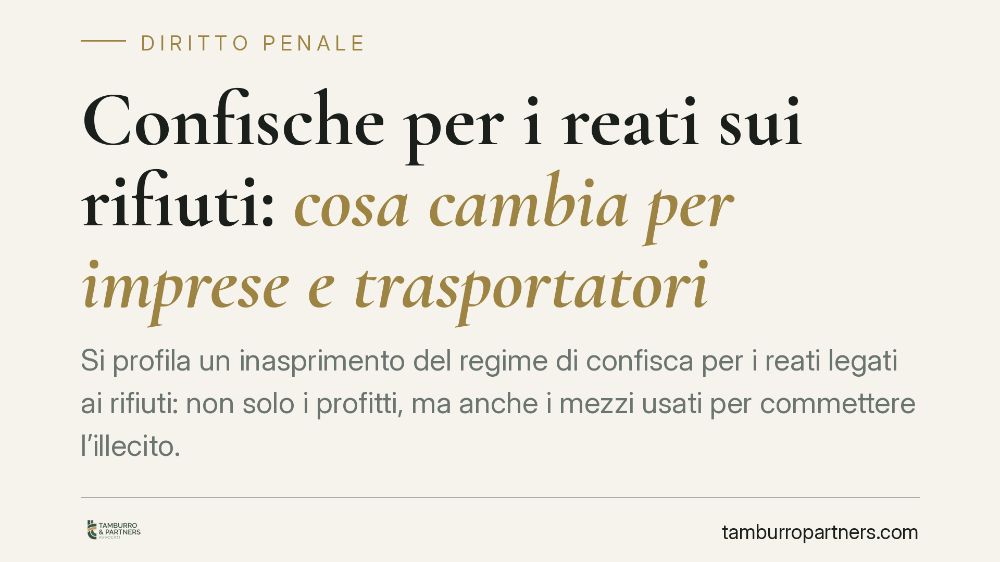

Confische per i reati sui rifiuti: cosa cambia per imprese e trasportatori
Si profila un inasprimento del regime di confisca per i reati legati ai rifiuti: non solo i profitti, ma anche i mezzi usati per commettere l'illecito. La misura interessa imprese, artigiani e trasportatori. Qui chiariamo il quadro normativo, distinguendo con precisione le fonti coinvolte, e indichiamo le cautele concrete da adottare per non esporre i beni aziendali al sequestro.

Avvertenza preliminare sulla fonte
La notizia circolata attribuisce le novità a un D.lgs. 186/2026, attuativo della direttiva UE 2024/1260, con decorrenza indicata al 31 ottobre 2026. Allo stato, questi riferimenti non risultano verificabili nelle banche dati ufficiali. Li trattiamo quindi come dato da confermare: prima di assumere qualunque decisione fondata su questo provvedimento, è indispensabile riscontrare numero, anno e contenuto effettivo del decreto. Il resto dell'articolo illustra il quadro vigente e la direzione indicata dalla notizia, al condizionale dove necessario.
Le fonti in gioco: due piani da non confondere
La materia sanzionatoria sui rifiuti poggia su due corpi normativi distinti, che vanno tenuti separati.
Il primo è il Codice dell'ambiente (D.lgs. 152/2006). L'art. 255 punisce l'abbandono e il deposito incontrollato di rifiuti da parte di soggetti non imprenditoriali (illecito in prevalenza amministrativo, con risvolti penali in casi specifici). L'art. 256 disciplina la gestione illecita di rifiuti — raccolta, trasporto, recupero, smaltimento in assenza delle autorizzazioni prescritte — con fattispecie contravvenzionali e sanzioni più severe per i rifiuti pericolosi. È in questo ambito che si colloca l'attività di imprese e trasportatori.
Il secondo piano è quello degli ecodelitti del Titolo VI-bis del Codice penale (artt. 452-bis e seguenti). Qui va fatta chiarezza: l'art. 452-bis c.p. punisce il delitto di inquinamento ambientale, mentre l'art. 452-quaterdecies c.p. riguarda le attività organizzate per il traffico illecito di rifiuti. Sono fattispecie diverse da quelle del Codice dell'ambiente e scattano al ricorrere di presupposti propri. Accostarle indistintamente sarebbe un errore.
Che cosa cambierebbe sul fronte confisca
La notizia descrive un ampliamento delle confische obbligatorie per i reati sui rifiuti. Vale la pena ricordare che alcune confische ambientali sono già oggi obbligatorie o dovute in casi determinati: ad esempio l'art. 259, comma 2, D.lgs. 152/2006 prevede la confisca del mezzo di trasporto in ipotesi di traffico illecito. Non si parte quindi da un sistema interamente discrezionale; il nuovo regime ne estenderebbe la portata.
È utile distinguere le tre forme di confisca:
- Confisca diretta: colpisce il bene che costituisce il profitto, il prezzo o lo strumento del reato (ad esempio il furgone impiegato per il trasporto illecito).
- Confisca per equivalente: quando il bene diretto non è aggredibile, colpisce altri beni del reo per un valore corrispondente.
- Confisca verso terzi: può investire beni formalmente intestati a soggetti diversi dall'autore, se risultano nella sua disponibilità o frutto di intestazioni fittizie.
La notizia richiama anche la confisca allargata, che nel nostro ordinamento è disciplinata dall'art. 240-bis c.p. Questa misura non è automatica: presuppone la condanna per uno dei reati inseriti nel relativo catalogo e la sproporzione tra il patrimonio del condannato e i redditi dichiarati, non giustificata. L'eventuale inclusione dei reati sui rifiuti in tale catalogo andrà verificata sul testo definitivo.
Perché l'estensione al patteggiamento pesa
Il punto più delicato riguarda l'applicabilità delle nuove confische anche in caso di patteggiamento (art. 444 c.p.p.). Se confermata, questa previsione modifica la convenienza della definizione concordata: chiudere il procedimento con pena patteggiata non metterebbe al riparo dal sequestro dei beni strumentali e del profitto. La strategia difensiva va quindi ricalibrata a monte, valutando l'impatto patrimoniale complessivo e non solo l'entità della pena.
Cosa fare in concreto
- Verificate il titolo di possesso dei mezzi: documentate proprietà, leasing o noleggio dei veicoli impiegati, per circoscrivere l'esposizione a confisca diretta e verso terzi.
- Tenete in ordine FIR e registri: formulari di identificazione rifiuti e registri di carico/scarico aggiornati sono la prima linea di difesa contro la contestazione di gestione illecita.
- Controllate autorizzazioni e iscrizioni all'Albo Gestori Ambientali, verificandone scadenze e corrispondenza con le attività effettivamente svolte.
- Mappate il rischio patrimoniale: individuate quali beni aziendali e personali potrebbero rientrare nelle diverse forme di confisca.
- In caso di procedimento, valutate la strategia prima di aderire al patteggiamento, considerando l'effetto delle misure ablative sul patrimonio.
Disclaimer
Contributo informativo a cura di Tamburro & Partners - Avv. Giuseppe Tamburro. Non costituisce parere legale.
Ogni condominio ha una storia a sé.
Se gestisci un'amministrazione e vuoi un confronto su una specifica questione condominiale, scrivi allo studio. Ti rispondiamo entro un giorno lavorativo.